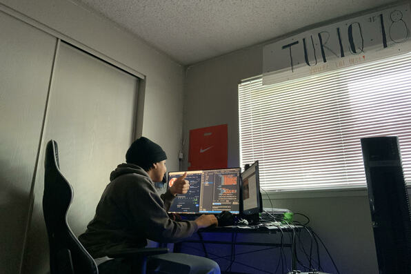
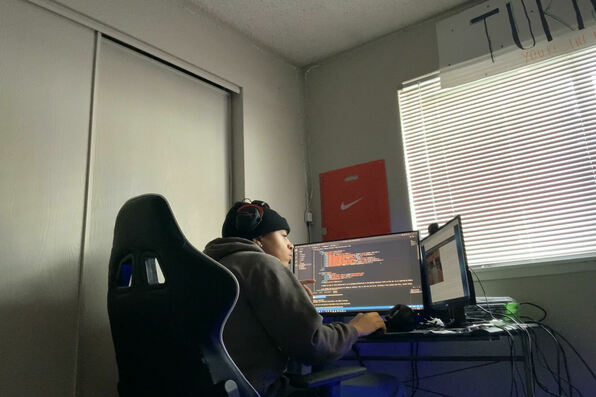
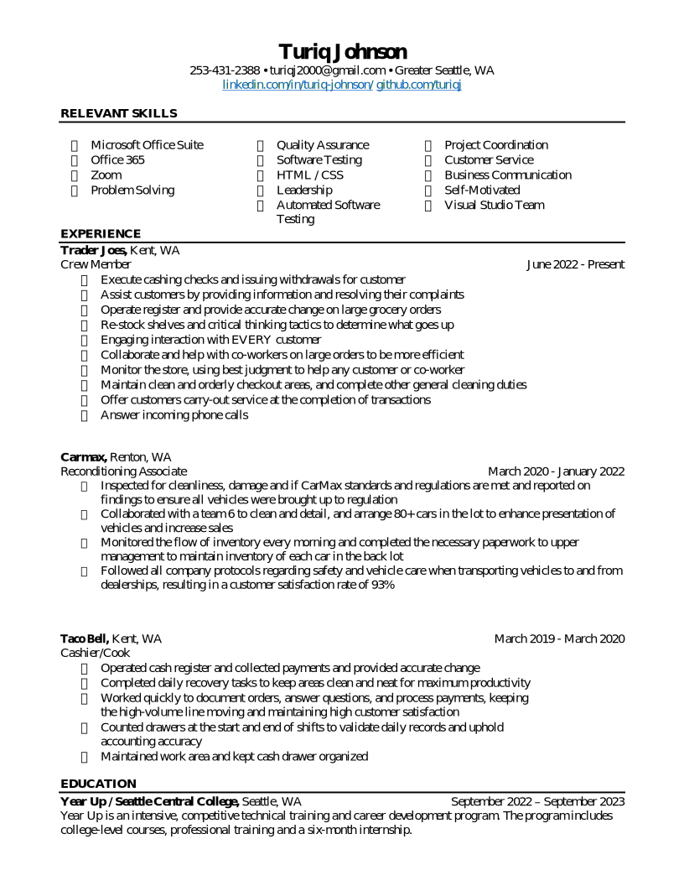

About Me
Hello! My name is Turiq Johnson and I am an emerging professional on the Quality Assurance track at Year Up. As an aspiring QA Engineer, I feel like Year Up is the perfect oppritunity to dip my feet into the technology field.
As someone who has no background in coding or software, this is all very new to me. Currently I have worked with HTML, Visual Studio code, and a little bit of CSS.
Currently in my learning and development stage at Year Up, and taking in as much information as I can that will help me reach some goals I'm here to talk about. In about 4 and a half months, my goal is to get an internship and there I plan on dipping more of my foot into the field. This includes networking myself more, working with peers professionally, and more.
As I said above, after putting my foot into the tech field my goal after internships is to secure a job. After the 6 month internship, the main goal would to get a job with the same respective company I interned at. The reason being is already knowing the companies in and outs, culture, code language and testing, etc.
Now maneuvering around the field of technology is certainly not an easy process. It is vital that in the 6 months of learning and development, I learn how to network myself effectively and efficiently. I'm taking a Business Communications class where we will learn so much more than the coding material needed on the job. What does it mean when i say that? While working in IT, It's vital for everyone to know the business aspects in companies. Things like presenting ad-hoc reports, how to write business emails, effectively communicating proffesionally to co-workers, and much more.
  